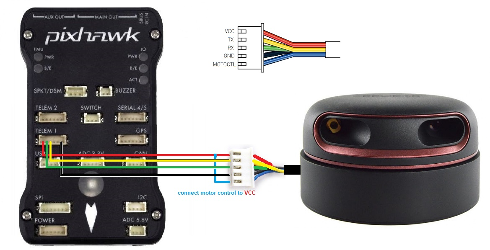

Traversing rough terrain: Rovers are often deployed in environments with rugged landscapes such as rocky terrains, steep slopes, or even extraterrestrial surfaces. The inability to navigate such rough terrains restricts their access to important locations, limiting their ability to explore and gather valuable data. Overcoming this limitation would enable rovers to venture into previously inaccessible areas, unlocking new scientific discoveries and expanding our understanding of the natural and extraterrestrial worlds.
Inability to climb stairs: Urban and indoor environments often feature staircases or other vertical obstacles that pose significant challenges for rovers. This limitation hinders their ability to perform tasks in buildings, disaster-stricken areas, or even search and rescue operations. Enabling rovers to overcome this obstacle and navigate staircases would greatly expand their potential applications, allowing them to access areas that are currently inaccessible to conventional wheeled rovers.
Lack of overall visibility: Rovers typically rely on cameras and sensors to perceive their surroundings. However, these systems have limitations in terms of range, resolution, and field of view. The restricted visibility prevents rovers from comprehensively assessing their environment, which can lead to missed opportunities or potential hazards. Developing technologies that provide rovers with a broader and more detailed understanding of their surroundings would greatly enhance their situational awareness and decision-making capabilities.
Overview
Our project focuses on developing an autonomous ground navigation system for a robot that can serve as an advanced delivery bot capable of delivering packages to various locations. With a range of innovative features, our solution aims to revolutionize the delivery industry by enabling efficient and intelligent autonomous delivery operations.
Autonomous Navigation: The robot is equipped with state-of-the-art navigation capabilities, allowing it to autonomously navigate to designated destinations. It utilizes advanced algorithms and sensor data to make intelligent decisions and safely navigate through various terrains, obstacles, and road conditions.
Object Detection: Our system incorporates sophisticated object detection techniques that enable the robot to detect and recognize objects in its surroundings. This capability ensures safe and reliable navigation by identifying potential obstacles or hazards along its path.
Sign Detection and Understanding: Our system incorporates advanced computer vision algorithms to detect and interpret road signs and other relevant signage. This feature enables the robot to comprehend traffic regulations, navigate through intersections, and follow specific instructions, ensuring compliance with traffic rules and enhancing overall safety.
End-to-End Delivery: Our solution provides end-to-end delivery capabilities, from pickup to final destination. The robot can autonomously handle package collection, secure storage, route planning, and efficient delivery, eliminating the need for human intervention throughout the process.
By combining cutting-edge technologies, including advanced navigation algorithms, computer vision, and intelligent decision-making, our autonomous ground navigation system offers a comprehensive and reliable solution for autonomous delivery operations. With its ability to detect objects, understand road conditions, and navigate autonomously, our robot has the potential to revolutionize the delivery industry, providing efficient and safe deliveries to diverse locations.
Modules
Rover: The rover is the physical vehicle or robot that is designed for autonomous ground navigation. It serves as the main component of the rover ecosystem and is responsible for carrying out various tasks and missions. The rover consists of several subsystems and components that work together to enable its operation and functionality.
Subsystems of Rover:
Motor: Motors provide the necessary propulsion for the rover to move. They generate rotational motion that drives the wheels or tracks of the rover.ESC (Electronic Speed Controller): ESCs control the speed and direction of the motors by regulating the power supply to them.
Flight Controller: The flight controller acts as the brain of the rover, responsible for processing sensor data, executing control algorithms, and generating commands to control the rover's movements. In the context of rovers, the flight controller, such as Pixhawk, is used as a central processing unit.
Frame: The frame refers to the physical structure or chassis of the rover that holds all the components together. It provides stability and protection to the internal components.
Sensors: Sensors play a crucial role in the rover's perception and navigation capabilities. They can include cameras, LiDAR, GPS, inertial measurement units (IMUs), and other environmental sensors. These sensors gather data about the rover's surroundings and provide valuable information for decision-making and navigation.

Lidar and Pixhawk
Ground Control System:
The ground control system (GCS) is a vital part of the rover ecosystem, enabling remote control, monitoring, and communication with the rover. It consists of hardware and software components that allow operators or users to interact with the rover and oversee its operation.
Ground Control System Components:
Hardware: The hardware components of the ground control system include devices such as laptops, tablets, smartphones, or dedicated ground control stations. These devices provide a user interface for operators to interact with the rover and monitor its status.
Software: The software component of the ground control system includes applications or programs that facilitate communication, mission planning, and monitoring of the rover. Examples of popular ground control software are Mission Planner (Windows) and QGroundControl (available for IOS, Linux, and Windows).
Jetson Nano
Communication Systems:
Communication systems are responsible for establishing a reliable connection between the rover and the ground control system. They enable real-time data transmission, command execution, and telemetry monitoring.
Communication System Components:
Hardware: The hardware components of the communication system include telemetry systems and antennas. Telemetry systems establish a wireless link between the rover and the ground control system, allowing bidirectional data transmission. Antennas help in transmitting and receiving signals over the communication link.
Software: The software component of the communication system involves protocols and communication frameworks that facilitate data exchange between the rover and the ground control system. MAVLink is a popular communication protocol used in the drone and rover ecosystem. It provides a lightweight and efficient means of communication between different components of the system.
Telemetry System
Results
Our advanced rover system boasts an impressive capability to accurately detect objects positioned ahead of it, facilitating intelligent decision-making for obstacle avoidance. Leveraging this capability, it can dynamically maneuver towards the nearest path, be it on the left or right, ensuring seamless navigation in complex environments. Moreover, the rover diligently adheres to a predetermined list of waypoints, meticulously following its navigation path with precision and reliability. By seamlessly integrating object detection, adaptive path selection, and waypoint-guided navigation, our rover consistently reaches its desired end goal, making it a highly professional and efficient solution for a wide range of applications.
Rover completing the navigation for its path trace and arriving to its end point